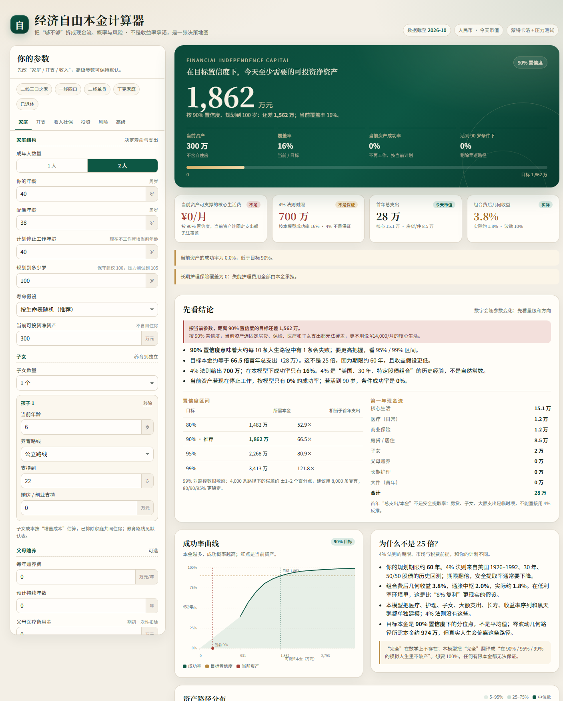

一个人或一个家庭，究竟至少需要多少本金，才可以说“完全经济自由”？这个模型把支出、通胀、社保养老金、医疗、长期护理、子女、大额支出、长寿、收益序列和黑天鹅放在同一条现金流里，用蒙特卡洛和压力测试给出概率答案。
40/38 岁夫妻，一个 6 岁孩子；可投资资产 300 万；核心生活 1.4 万/月；现在停止工作；规划到 100 岁。
4% 法则来自美国 1926–1992 年、30 年、50/50 股债的历史回测；这里是中国、60 年、费后几何 3.84%、通胀 2.0%，还要覆盖医疗、护理、子女、大件和“退休后前 3 年大跌”的序列风险。默认案例的目标本金约等于首年支出的 66.5 倍。
90% 不是保证。它意味着约每 10 条模拟人生有 1 条失败；想要更高把握，看 95%/99%，或者降低支出、晚一点停止工作。

关键数据来自国家统计局、人社部、国家卫健委、中债等；数据截至 2026-10-25。CPI 默认 2.0% 是长期假设，不是当前值（2025 实际 0.0%）；3,162 元是 2023 年企业退休人员月人均，不是 2025 年。完整来源与口径见 DOCX 与计算器“数据、假设与模型边界”。
规划工具，不构成投资、保险、税务或法律建议。所有“预期收益”都是假设，不是承诺。